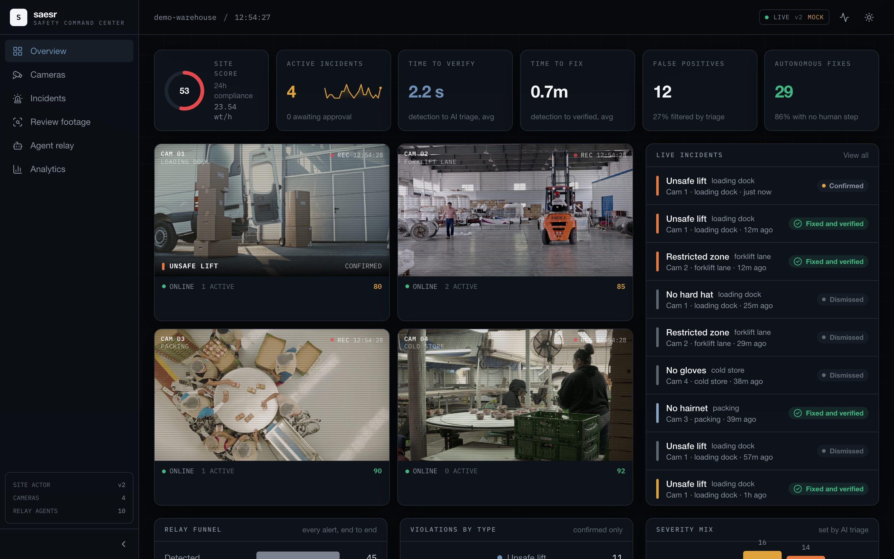
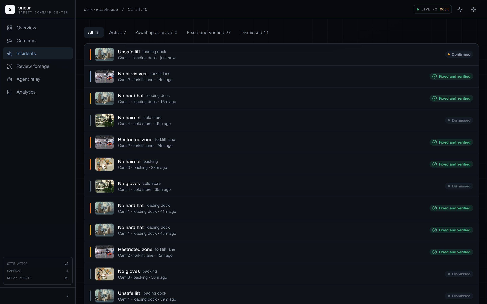
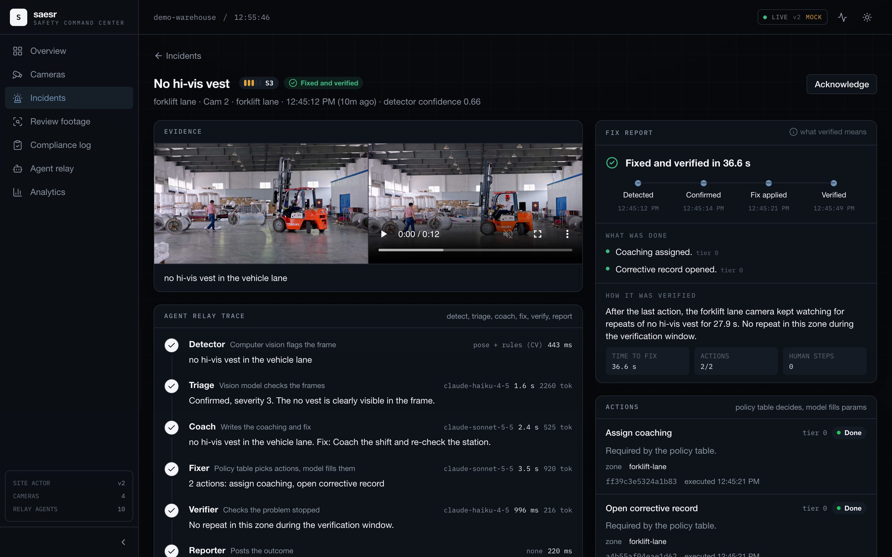
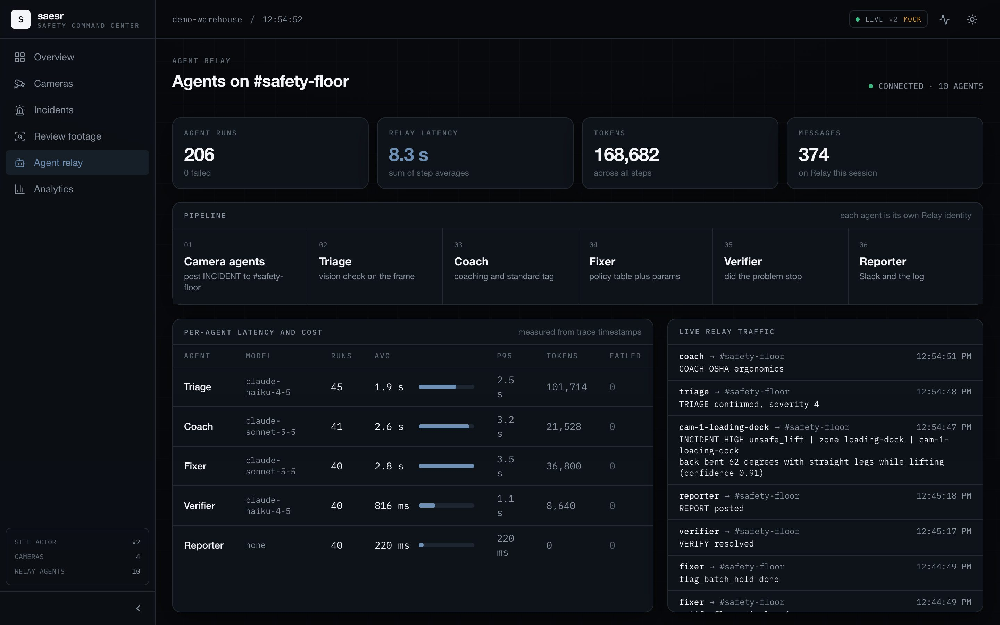
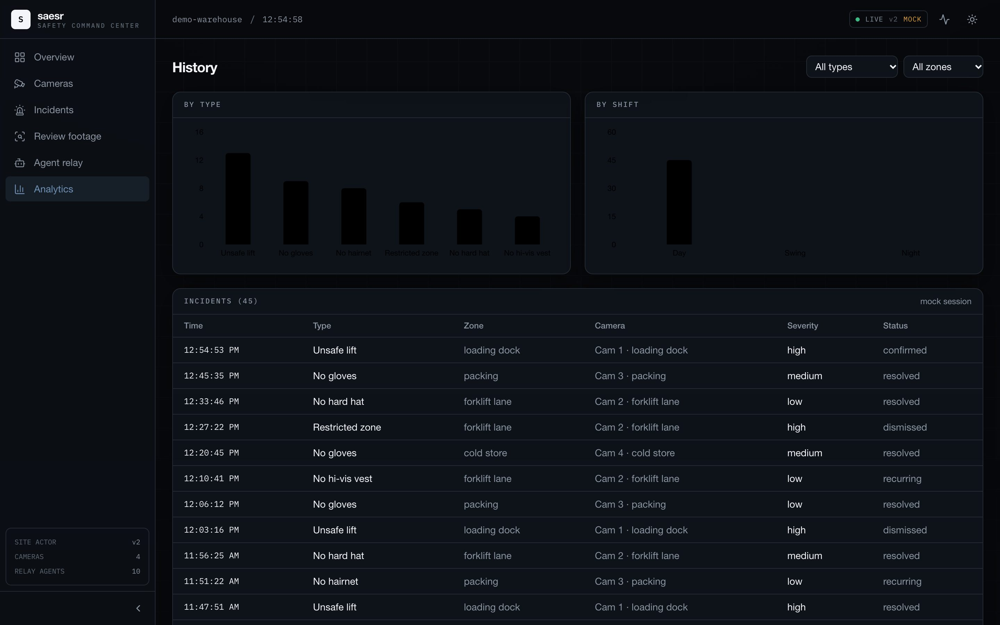
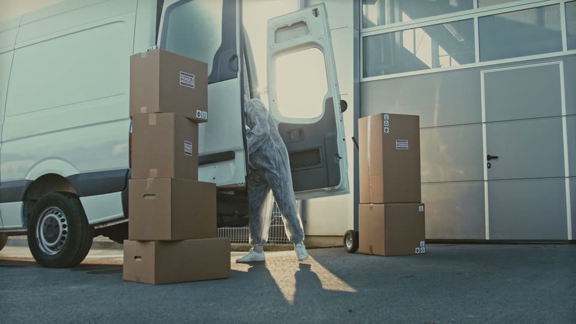
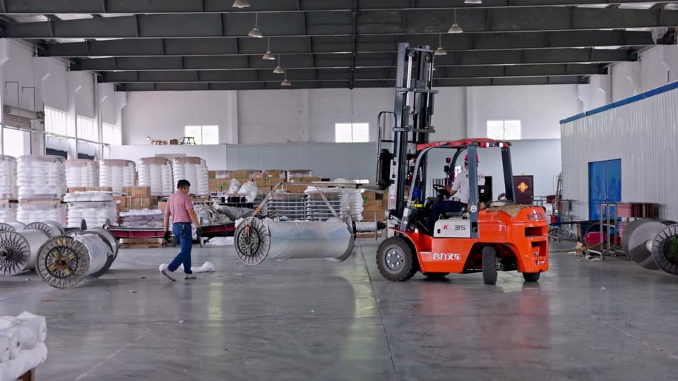
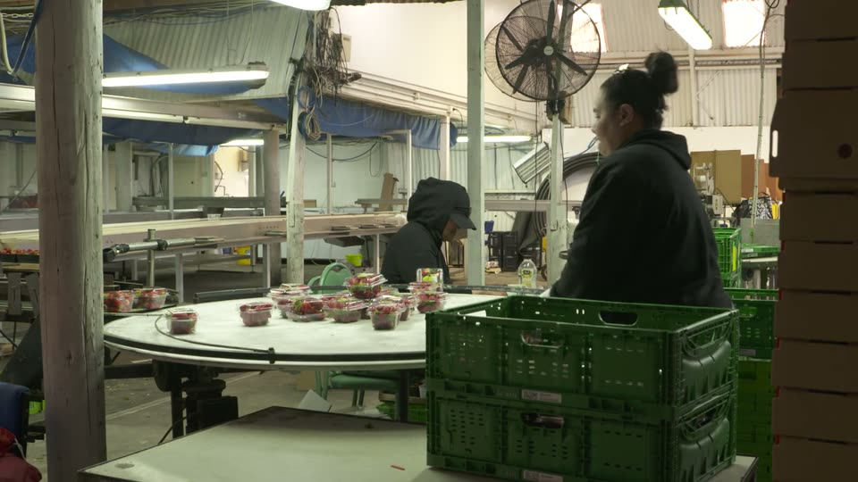

saesr watches the cameras you already have, verifies every risk with AI, and fixes it before it becomes an injury or a recall.
Back bent 62 degrees with straight legs while lifting.
Built for food plants and warehouses. Works on the CCTV you already run.
A year in US workers' comp from lifting and overexertion injuries.
Liberty Mutual Workplace Safety IndexAverage direct cost of a single food recall.
Industry study, 2012People watching most of those cameras right now.
Live feeds, live incidents and a site score you can read in one glance.
AI checks every alert against the frame before anyone gets paged.
Coach the worker, stop the equipment, hold the batch. Then it keeps watching until the problem is gone.
Triage, coach, fixer, verifier and reporter, working together on one relay.
Which zone, which shift, which risk. Every week.






Unsafe liftBent backs, straight legs, loads too far out.

Restricted zonePeople in forklift lanes and restricted zones. Missing hard hats and vests.

No hairnetMissing hairnets and gloves on the line, before product ships.
Each camera is a durable actor. It keeps its own history across shifts and restarts, so a repeat at 3 AM is caught as a repeat.
AI confirms the risk before anyone is paged. After the fix, the camera keeps watching until the problem is gone.
Urgent hazards stop the equipment instantly and coaching runs on its own. Holding a batch waits for a supervisor.
| saesr | Intenseye | Voxel | Protex AI | Spot AI | |
|---|---|---|---|---|---|
| Runs on cameras you already have | |||||
| Unsafe lifts | |||||
| Food hygiene: hairnets and gloves | |||||
| Stops equipment | |||||
| AI checks every alert before paging | |||||
| Coaches the worker on the spot | |||||
| Holds affected product batches | |||||
| Confirms the problem is gone |
No. saesr runs on the cameras you already have. Software only.
Unsafe lifts, missing hard hats and hi-vis vests, people in restricted zones, and missing hairnets and gloves.
Urgent hazards, like a person in a forklift lane, stop the equipment instantly. Coaching runs on its own. Holding a batch of product waits for a supervisor to approve.
Every alert is checked by AI against the frame before anyone is paged, and every incident keeps its clip and a full trace of what was done.
They detect and alert. saesr also fixes the problem, holds affected product when hygiene slips, and confirms the problem is gone before it closes the incident.
No. It gives them eyes on every camera, every shift, and hands them the incidents that need a person.
Book a demo. We pick one site and a few cameras, then pilot from there.